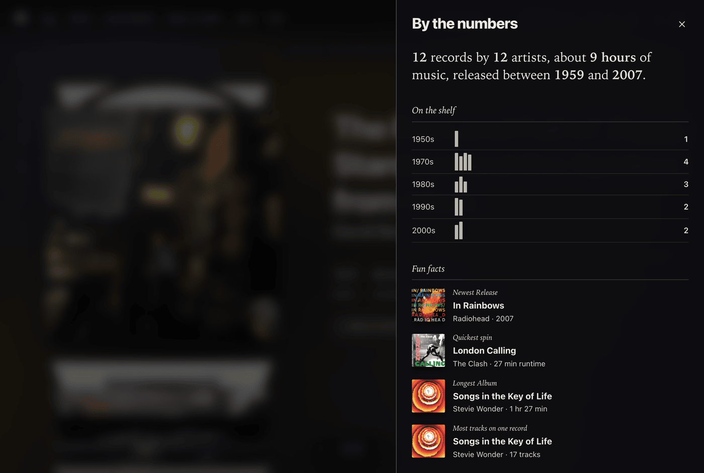

Collection Stats: By the Numbers
The stats panel shows what your collection adds up to: how much music it holds, how it spreads across the decades, and a few facts you would never have counted yourself.
Nearly everything is worked out on your device from the records you have synced. The one exception is the market value, which comes from Discogs.
Viewing Your Statistics
You can open the stats panel at any time:
- Click the bar chart icon in the top header utility pill.
- Or open Settings and click the Collection stats row.
The panel slides in from the side without disrupting your current position in the crate. It is not shown while you are browsing someone else's shared crate.

The Summary
The panel opens with a single sentence: how many records you have, how many artists they come from, about how long they take to play, and the span of years they were released across. For the demo crate it reads 12 records by 12 artists, about 10 hours of music, released between 1959 and 2007.
- Playing time adds up the track lengths Discogs lists. A release with no lengths on file counts as zero, and the hours only show once there is at least one.
- Artists are counted by name. Compilations credited to Various Artists are not counted as an artist.
What It Is Worth
When you are connected to Discogs and looking at your own collection, a line under the summary says what your collection is worth right now. It gives a median value and the range from lowest to highest, with a small marker showing where the median sits between them.
The figure is based on current marketplace listings on Discogs, so it moves as prices move. Spindex asks for it each time you open the panel and never saves it. You will not see it in the demo crate, and if Discogs cannot be reached you will get a short note instead.
On the Shelf
Your records stand on a shelf, one row for each decade and one spine for every record, with the count at the end of the row. It is a quick way to see whether you are a 1970s person or a 2000s person.
Spindex uses the year shown on each record. Records with no year are left off the shelf and counted in a note underneath. In a very large crate one spine can stand for a few records, and the note says how many.
Fun Facts
Below the shelf are four facts picked at random from a long list, so the panel is a little different each time you open it. They are all worked out from what is already inside your records: their Discogs details, formats, dates, tracklists, and titles.
The physical world
- Estimated weight: a rough weight for the whole pile, sleeves and all, in pounds and kilograms. It looks at each record: a double album has two discs and a bigger jacket, a 180 gram disc is heavier, and a seven-inch is a fraction of an LP.
- Shelf space: about how many feet and inches of shelf the crate needs, standing up. Double albums are thicker and seven-inches are thin.
- Start to finish: how many sides there are to play, which is how many times you would flip or change a record to hear everything.
- Needle mileage: about how many miles of groove the needle would follow to play it all, and how many times the records would spin. This is an estimate: it assumes about 23 meters of groove for each minute at 33 ⅓ rpm, and more at 45.
- Longest side of vinyl: the single side with the most music on it.
When things arrived
- Cataloging habit, biggest haul, first and latest additions, busiest month, longest dry spell, collecting since, and your pace (a new record about every so many days), all from the dates you added records to Discogs.
- Next birthday: the pressing in your crate that has a release date coming up in the next two months, when Discogs knows the exact day. For a reissue, it is the pressing's birthday and not the album's.
From the full Discogs details
These appear once each release's details have loaded.
- Most common label, recording studio, mastering studio, and pressing plant, each shown with a fan of the covers it touches. "Columbia" and "Columbia Records" count as one label, and self-released records are left out.
- Label loyalty: when a few labels cover a big share of the crate.
- Most common performer, producer, songwriter, and cover artist or photographer. A musician's own records do not count towards being the most common performer, so this is about the people who keep turning up on other people's albums.
- Multi-instrumentalist: the person credited with the most different parts across your records.
- Do it yourself: how many records were produced by their own artist.
- Closest relatives: the two records by different artists that share the most credited people.
- Well travelled: how many countries your pressings come from, and which one has the most.
- Most people credited on a single record.
About your collection
- Collector facts: albums you own more than once in different pressings, reissues and limited editions as a share of the crate, mono pressings, multi-disc sets, and the odd ones out (seven-inches, ten-inches, and twelve-inches at 45 rpm).
- Biggest reissue gap: the record whose pressing is furthest from its first release, and the average age of a record in your crate.
- Condition, if you grade your records in Discogs: the share at Near Mint or better, how many sleeves are in rougher or better shape than their records, and your roughest record. Your grades are private to you.
- Oldest and newest release, favorite release year, longest album, quickest spin, most tracks on one record, longest single track, and the total number of songs.
- Most artists on one record: the compilation, soundtrack, or tribute with the most different artists on it. This counts the artists billed and named on each track, not the musicians and crew in the credits.
- Most collected artist, favorite style, longest stretch (the artist with the widest span of years in your crate), self-titled releases, solo discoveries, and your range of genres and styles.
- Word games: longest and shortest title, the shortest artist name, records named after a song on them, your busiest letter, how much of the alphabet your artists cover, the most repeated word in your song titles, and a color that keeps turning up in titles.
A fact only appears when there is enough behind it. "Most common label" needs a label to show up on at least three records, and the weight estimate and cataloging habit need at least ten records in the crate. When two or more are tied, the card says so. Credits depend on what Discogs has on file for each release, so they fill in for some records and not others.
Filed Under
A list of genres with a count beside each, like the index at the back of a book. Every record is filed under its main genre, so the counts add up to your whole collection. The seven biggest genres get a line of their own and the rest are grouped as Everything else. A record with no genre is filed as Unfiled.
Pressings
This section tallies your records by how the vinyl looks: black, clear, color, marbled, splatter, swirl, split, and picture discs, each with a small disc swatch in that color. Standard black pressings are counted too, and for most collections they are the biggest line.
Color comes from the full Discogs details for each release, which Spindex fills in gradually after a sync. Until they have all loaded, a note tells you how many records the tally covers so far.
Added Over Time
A line showing how your collection grew, month by month, from the dates you added each record to Discogs. Months where you added nothing take up their real share of the width, and each new year gets a faint marker, so a buying spree shows up as a steep climb.